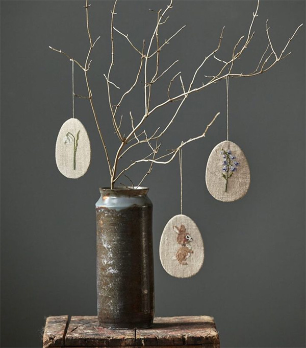
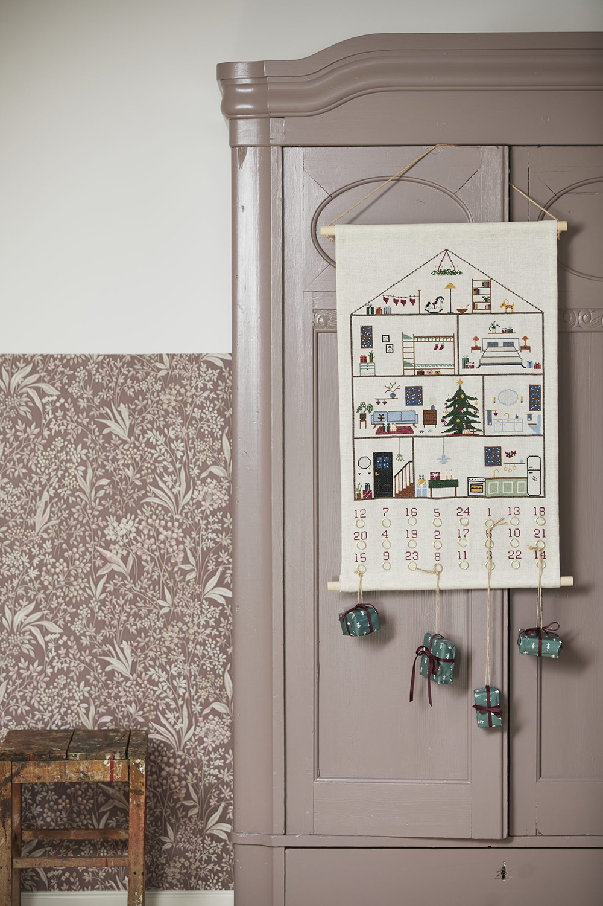

Det skal du vide inden du starter
Først og fremmest er det vigtig at finde ud af, hvilken sværhedsgrad der passer til dig.
Dernæst er det vigtigt at vide at, det er okay at lave fejl. - Det gode ved broderi, er at det bare kan travles op, så man kan starte forfra.
Det sidste man skal vide er at du benytter de rigtige materialer. Da det ikke er alt der fungerer til at brodere med.
